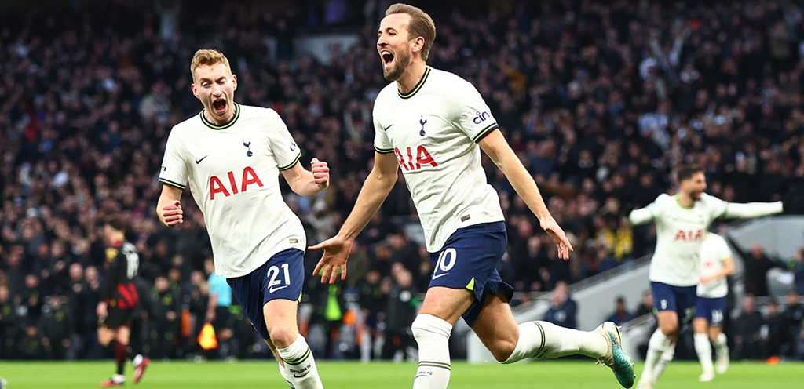

- Profile
Harry Edward Kane (28 July 1993) is an English professional footballer who plays as a striker for Tottenham Hotspur and captains the England national team.
- Career
Harry Kane had fast progression through the Tottenham Hotspur's youth academy. He was promoted to the senior team in 2009, at age 16. As Mauricio Pochettino became head coach in 2014, Kane's involvement at Tottnham increased. He finished 2015-16 and 2016-17 seasons as the league's top goalscorer. Now on, He is both Tottenham Hotspur's and England's all-time highest goalscorer, as well as being the second-highest Premier League all-time goalscorer. He has scored over 350 goals for club and country.
